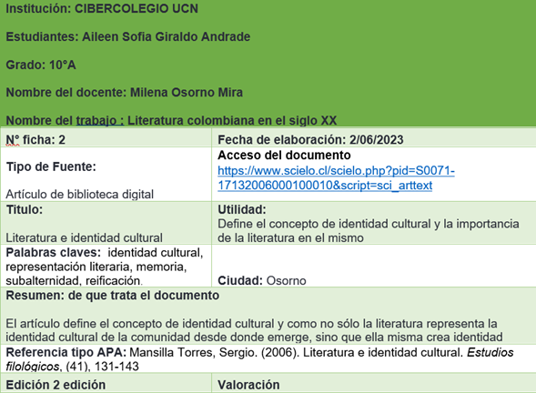
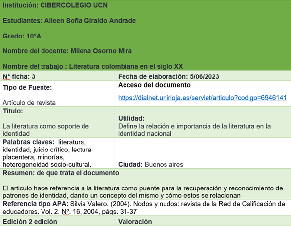
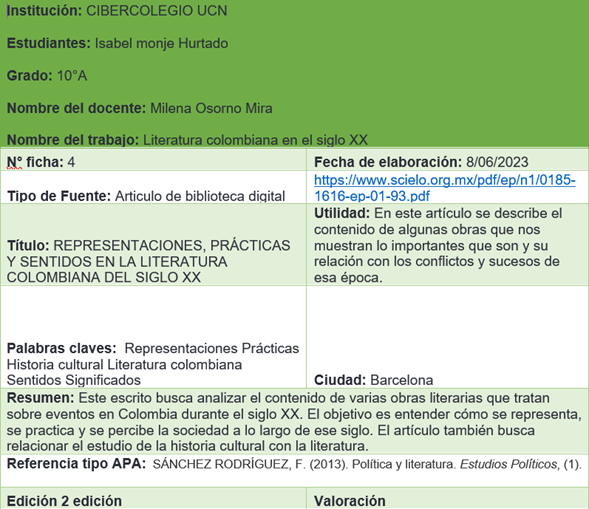
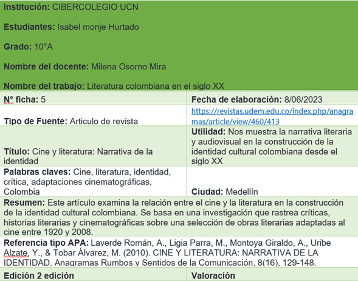
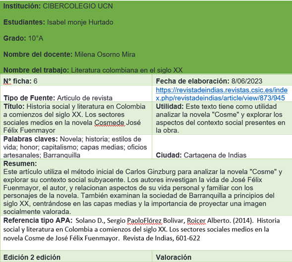

Fichas
Las fichas bibliográficas son herramientas fundamentales en el ámbito académico y de investigación, ya que permiten registrar de manera organizada y sistemática la información relevante de las fuentes utilizadas. Su importancia radica en varios aspectos Estas fichas permiten acceder rápidamente a la información necesaria, proporcionando los datos esenciales de cada obra, como el autor, título, año de publicación y lugar de edición. Esto facilita la búsqueda y recuperación de los materiales consultados, ahorrando tiempo y esfuerzo al investigador




